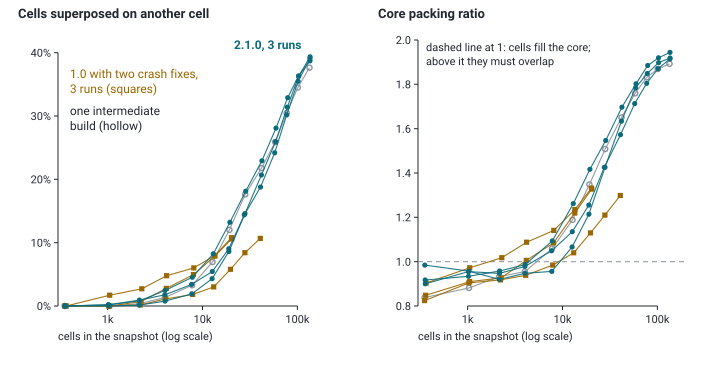
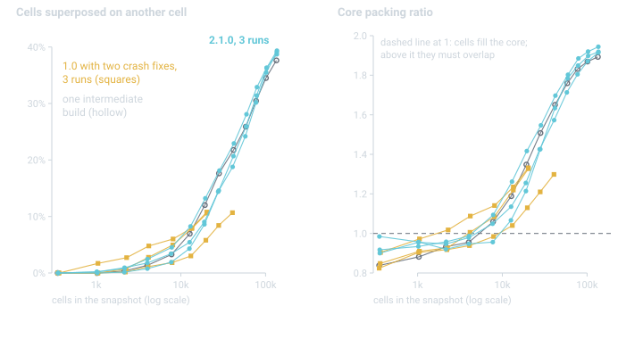
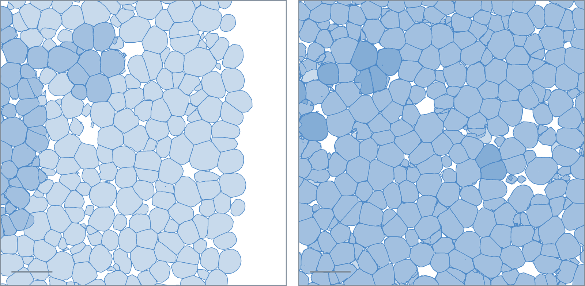

Limits of the model#
Once runs finish and report what they did, the next limits are in the model and its shipped configurations. The limits below were measured in the November 2026 benchmark (Method). Each is present in 1.0 (where 1.0 runs far enough to show it) and in 2.1.0 alike; none is a regression of 2.x.
Cell superposition in the growth benchmark#
In the growth benchmark (parameters_benchmarck.xml, contact model 1, time step 2.5e-8 s), the
core of the aggregate stops being a packed tissue beyond about 5,000 cells: cells come to sit on
top of each other.
Definitions used here, all computed from the mesh snapshots:
The centroid of a cell is the mean of its mesh nodes; its radius r is that of a sphere of the same volume.
A cell is superposed when the centroid of another cell lies within 0.25 r of its own.
The tissue radius R is the radius of a sphere with the volume of the convex hull of all nodes.
The core packing ratio is the summed volume of the cells whose centroids lie within 0.5 R, divided by the volume of that sphere. Above 1, the cells hold more volume than the space they occupy, so they must overlap.
What the snapshots show:
Up to about 1,000 cells the aggregate is packed in every run, and up to about 4,000 cells in 2.1.0. There the cells in the core fill 90 to 99% of its volume, neighbours that are not superposed overlap by less than 0.6% of a cell volume, and an interior cell touches about 13 others.
Then the core holds more cell volume than space. The packing ratio passes 1 between 4,000 and 13,000 cells in the 2.1.0 runs, and as early as about 2,000 cells in one run of 1.0 with two crash fixes. 5,000 cells is used here as the working limit.
At 136,043 cells (2.1.0), 39% of all cells are superposed; thresholds from 0.2 r to 0.5 r give 38 to 44%. The tissue then has about 0.8 distinct cell positions per cell. The packing ratio reaches 1.9.
Where: at 42,000 cells, 83 to 88% of the cells inside 0.3 R are superposed, and under 1% of those outside 0.7 R.
Versions: 1.0 with two crash fixes and 2.1.0 overlap up to 20,000 cells. Only one run of 1.0 with two crash fixes goes further: at about 41,000 cells it shows 11% superposed, against 19 to 23% in the three 2.1.0 runs.


Superposition against tissue size, every snapshot of seven long runs: three of 2.1.0, three of 1.0 with two crash fixes (squares) and one intermediate build (hollow). Left: share of cells superposed on another cell. Right: core packing ratio; above the dashed line at 1 the cells must overlap. Both versions leave the packed regime below 13,000 cells.#


Superposition against tissue size, every snapshot of seven long runs: three of 2.1.0, three of 1.0 with two crash fixes (squares) and one intermediate build (hollow). Left: share of cells superposed on another cell. Right: core packing ratio; above the dashed line at 1 the cells must overlap. Both versions leave the packed regime below 13,000 cells.#


At the edge of the tissue cells are packed; at its centre nearly every cell has a twin on top of it. The same cut of the 136,043-cell snapshot of 2.1.0, 70 µm windows. At the edge (left), neighbours meet along shared flat walls; two outlines overlap on 18% of the covered area. At the centre (right), two outlines cover 97% of the covered area. Every outline has the same translucent fill, so a denser fill (darker on a light page, brighter on a dark page) means two cells over the same point. Bar 10 µm.#
Why it cannot undo itself. In contact model 1 a node is repelled only while it is within the
contact cutoff of a neighbour’s face (src/contact_models/contact_node_node_via_coupling.cpp,
lines 263 to 265 at 2.1.0); the benchmark file sets the cutoff to 0.5 µm. A node pushed deeper
than that feels no contact force, so a superposed pair stays superposed. Core pressure exceeding
what the contact spring can carry at the cutoff is a plausible trigger; it has not been measured.
What the pairs are. Superposed partners are two separate meshes with volumes within about 1% of each other. They are not the two daughters of one division: at most one superposed pair in any snapshot is a pair of sisters. In an 18,940-cell snapshot, partners were born a median of about 10 iterations apart, against about 180 for neighbours that are not sisters, which is what two superposed mothers dividing in step would produce. What creates the first pair is not known.
Other tissues. The vesicle and the tube, which use contact model 2, show no superposed cell in 96 snapshots.
For users. Treat the growth benchmark above 5,000 cells as a test of the software’s scale and cost. Its per-cell statistics there are valid only in the outer shell. A restoring force beyond the cutoff, or a cutoff tied to cell size, are candidate fixes; neither has been tested.
Cells that die without a log line#
In the growth benchmark, cells compressed below the minimum volume are deleted, as the model prescribes. No build reports these deaths; they were counted from cell ids. By 144,000 live cells (2.1.0), 360,009 cells had died: 35.7% of all cells ever born. 1.0 with two crash fixes loses slightly more, 0.247 deaths per birth against 0.236 at 10,000 cells, so most of the loss belongs to the configuration, not to the version.
The vesicle shell does not confine a growing tissue#
With the shipped multilayer file (fig3e_multilayer.xml) run by the paper protocol, 25 to 30% of
the cells end mostly outside the static ECM surface; run as shipped for 48 hours, 98 to 100% do. In the ε sweep, the
bounding-box aspect ratio stays between 1.09 and 1.21 over a fourfold change of ε, and 12 to 27% of
cells touch neither the lumen nor the shell above ε = 1. With these files, the dependence of aspect
ratio on ε cannot be tested.
Exit status 0 after losing the tissue#
The shipped long monolayer file (fig3e_monolayer.xml, 1e-2 s) ends with 18 of 434 cells in 2.1.0
and exit status 0. 1.0 aborts on this file and 2.0 crashes; the builds after 2.0, 2.1.0 included, turn the failure
into removals, which keeps the run
alive and makes the exit code uninformative. Check the cell count and the removal log of every run
(Safeguards).
Defects still open in 2.1.0#
Defect |
Effect seen in the benchmark |
|---|---|
Force accumulation in contact models 0 and 1 is not thread-safe |
Every growth-benchmark number carries it. Its size is not measured: repeats agree within 2%, which bounds the scatter it adds, not a bias |
The Delaunay step of the cell divider has no iteration limit |
Two intermediate builds hung there at |
Daughter cells leak when a division fails after they exist |
Filled the memory in three intermediate builds; 2.1.0 refuses such divisions earlier, so the leak is avoided, not fixed |
Minimum-volume deaths and tissue loss are not reported |
Exit status 0 after losing 96% of the cells |
Division refusals rise with tissue size |
21% of attempts below 30,000 cells, 27% at 125,000 to 150,000; about 170,000 refusals in a 48-hour run |
Blow-ups of a few nodes, cause unknown |
Three in the 2.1.0 run at |
The bending force is not the exact gradient of its energy |
Inherited from 1.0; measured by finite differences, not yet corrected |
What this means for using results#
A run that completes is numerically clean, not biologically validated. Look at the tissue.
For the growth benchmark, per-cell statistics beyond about 5,000 cells describe the outer shell only, and a third of the cells born have died silently.
On the vesicle files, the shell does not hold the tissue; shape readouts of the multilayer depend on that.
Never take exit status 0 as success; count removals and compare the final with the peak cell count.
Repeated runs differ (Reproducibility); plan replicates for any comparison.